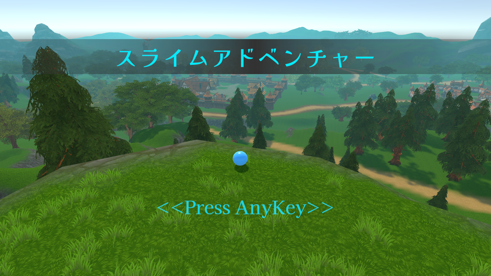
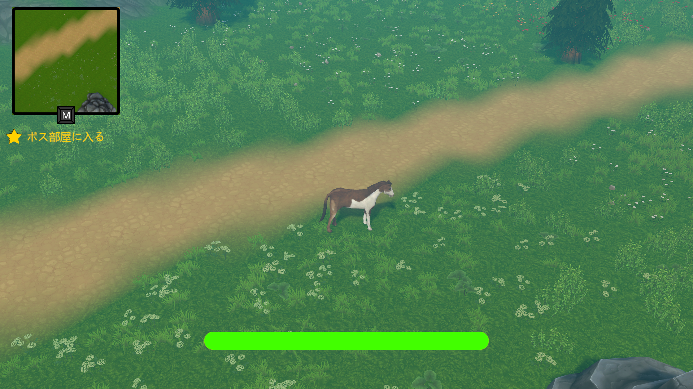
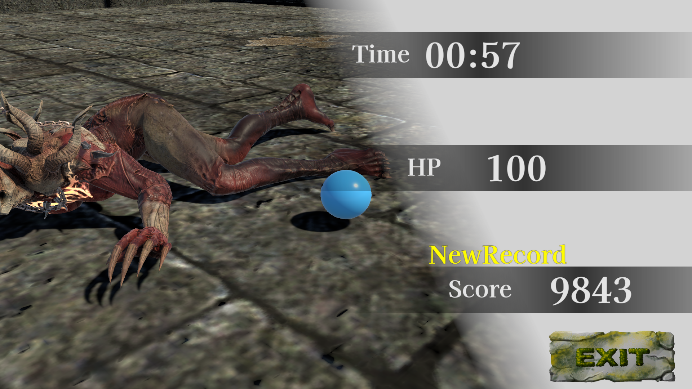

Overview
Unityで制作した見下ろし型オープンワールドゲームです。
スライムは憑依をすることでいろんなキャラを操作できます。
Information
- 制作期間：半年
- 制作人数：個人制作
- 使用技術：Unity / C# / UniTask / NavMesh
Implemented Features
- 汎用ステートマシンの自作
- 自作オブジェクトプール
- Strategyパターンによる攻撃フレーム処理
- CullingGroup API を使ったLODシステム
- 憑依システム（スライムが複数キャラクターに切り替わるコアゲームシステム）
- クエストシステム
Point
「憑依」でさまざまなキャラクターに乗り移りながら探索するのがこのゲームの醍醐味です。
切り替わる各キャラクターの挙動を一元管理するため、ジェネリクスで汎用ステートマシンを自作し全キャラ共通で利用しています。
CullingGroup API による独自 LOD でオープンワールドの処理負荷を抑えました。

